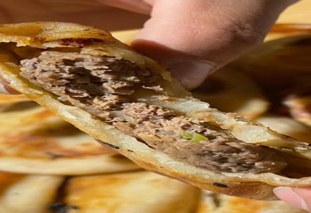
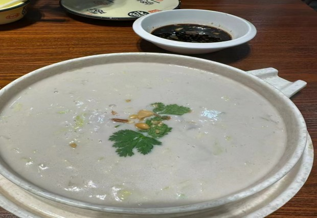
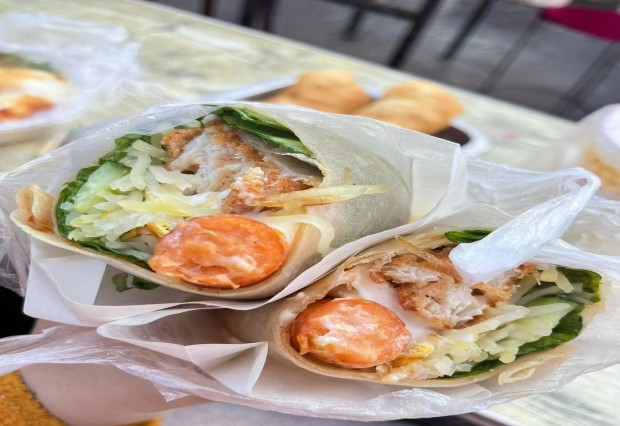
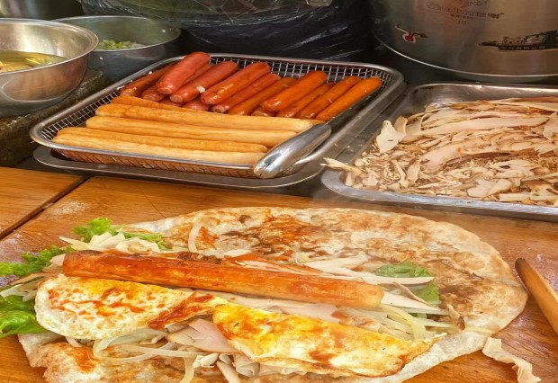
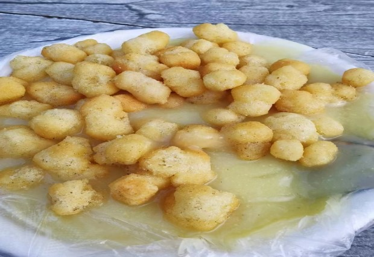
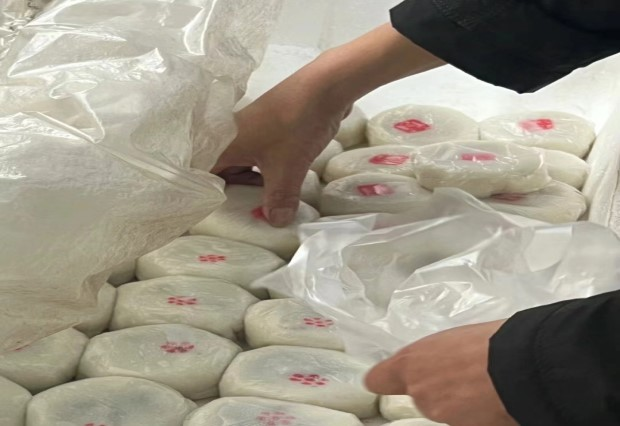
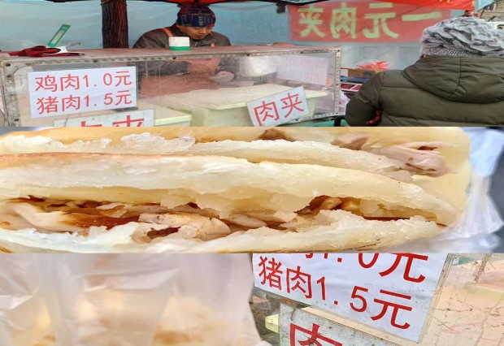
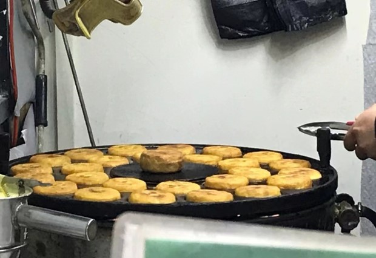

美食推荐
-

牛肉馅饼
这里的牛肉馅饼，外皮金黄酥脆，内馅肉馅鲜美多汁，每一口都是对传统工艺的致敬。馅饼的香气在早市上空飘散，吸引着食客们驻足品尝。
-

花生小豆腐
这道东北特色小吃，将花生磨碎后熬煮，细腻的口感和浓郁的花生香，让人在寒冷的早晨感受到一丝温暖。
-

鸡肉卷
大块的鸡排搭配脆骨肠、土豆丝，再淋上沙拉酱，每一口都是满满的幸福感。鸡肉卷的丰富馅料，让人在忙碌的早晨也能享受到满足。
-

熏肉卷饼
现擀的饼皮卷着熏肉、土豆丝、豆皮等丰富配料，刷上秘制酱料，每一口都是对传统美食的传承。熏肉卷饼的香气，让人在早市上流连忘返。
-

面茶
面茶是锦州的传统早点，黄小米粉熬煮成粥，搭配麻酱和果子蛋，每一口都是对传统早餐的尊重。面茶的温热和麻酱的香醇，让人在寒冷的早晨感受到家的温暖。
-

萝卜饺
蒸熟了的萝卜饺，皮柔滑，半透明，内馅隐约可见，吃起来薯粉饺皮的柔韧、猪肉的鲜美、萝卜的甜津和佐料的清香融为一体。
-

豆面糯米团子
糯米团子外皮软糯，内馅甜而不腻，是早市上的甜品佳品。每一口都能感受到糯米的细腻和馅料的甜蜜。
-

一元肉夹馍
一元肉夹馍以其实惠的价格和丰富的口感，成为早市上的热门选择。无论是猪肉的鲜美还是鸡肉的嫩滑，都让人难以忘怀。
-

肉蛋堡
这里的肉蛋堡，以其金黄酥脆的外壳和丰富的内馅而受到食客们的青睐。每一口咬下去，都是酥脆与鲜嫩的完美碰撞，让人忍不住一口接一口。
石桥子早市介绍
锦州石桥子早市，这座东北小城的清晨缩影，是一处充满烟火气的市井天堂。每天清晨，当第一缕阳光还未完全驱散夜的余温，早市的喧嚣便已悄然拉开序幕。这里，是锦州人一天生活的起点，也是游客体验地道东北风情的绝佳去处。
石桥子早市，以其丰富的商品和美食，吸引着无数市民和游客。在这里，你可以找到新鲜的蔬菜、水果，还有各种海鲜和肉类，它们在清晨的露水中显得格外诱人。而那些琳琅满目的早餐摊位，更是让人目不暇接。牛肉馅饼、小笼包、现炒坚果、花生小豆腐、烤地瓜、蒸玉米、早餐面、肉夹馍、鸡肉卷、豆面糯米团子、熏肉卷饼、面茶，每一道美食都承载着锦州人对食物的热爱和对生活的热情。
在石桥子早市，你可以感受到东北人的热情和直率。摊贩们吆喝着，顾客们讨价还价，孩子们在人群中穿梭，老人们悠闲地挑选着食材。这里不仅是一个购物的场所，更是一个社交的场所，一个文化的传承地。在这里，你可以深入了解锦州人的生活方式，体验这座城市独有的生活节奏。
随着时间的推移，石桥子早市不仅仅是一个市场，它已经成为了锦州的一张名片，吸引着越来越多的人前来探索。在这里，每个人都能找到属于自己的那份温暖和满足，无论是一碗热腾腾的面茶，还是一个香喷喷的肉蛋堡，都是对美好生活的最好诠释。